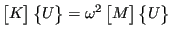
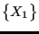
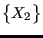

Next: Buckling calculations Up: Filling and solving the Previous: Nonlinear calculations Contents
Frequency calculations are performed in subroutines arpack.c for structures not exhibiting cyclic symmetry and arpackcs.c for cyclic symmetric structures. Frequency calculations involve the following steps:
The eigenvalues and eigenmodes are solved in shift-invert mode. This corresponds to Mode 3 in ARPACK ([43]). Suppose we want to solve the system
|  | (681) |
then the shift-invert mode requires algorithms for solving
and for calculating
where
 and
 are given and  is a parameter. In CalculiX, it is set
to 1. These operations are used in an iterative
procedure in order to determine the eigenvalues and the eigenmodes. For the first operation SPOOLES is used. SPOOLES solves a system by
using a LU decomposition. This decomposition is performed before the iteration
loop initiated by ARPACK since the left hand side of Equation (682) is
always the same. Only the backwards substitution is inside the loop. The
second operation (Equation (683)) is performed in routine op.f and is a
simple matrix multiplication. Notice that this routine depends on the storage
scheme of the matrix.
is a parameter. In CalculiX, it is set
to 1. These operations are used in an iterative
procedure in order to determine the eigenvalues and the eigenmodes. For the first operation SPOOLES is used. SPOOLES solves a system by
using a LU decomposition. This decomposition is performed before the iteration
loop initiated by ARPACK since the left hand side of Equation (682) is
always the same. Only the backwards substitution is inside the loop. The
second operation (Equation (683)) is performed in routine op.f and is a
simple matrix multiplication. Notice that this routine depends on the storage
scheme of the matrix.
For cyclic symmetric structures the following additional tasks must be performed: